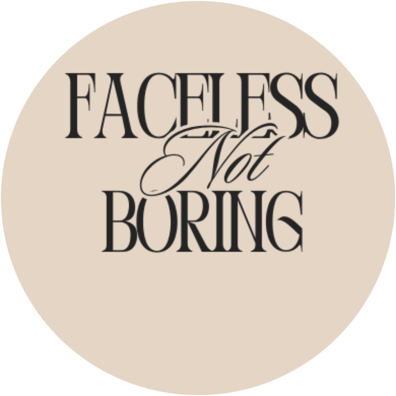
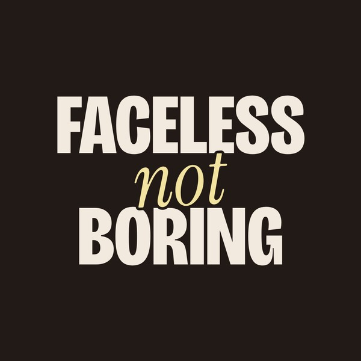
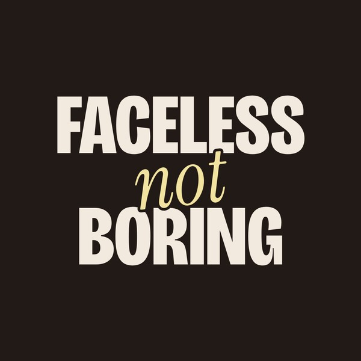
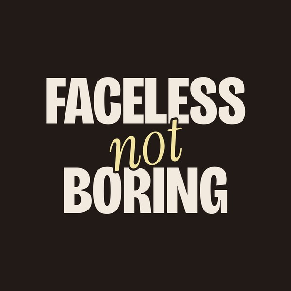

Logo refresh · decided
Your current logo beside three new options built from the new look: heavy condensed capitals with one italic word cutting through. Each one is shown on dark, on light, as an Instagram profile picture and as a browser icon.
Thin serif inside a circle. Reads as a template and goes soft at small sizes.

Your line stacked like a magazine cover. A butter "not" slashes through the middle at an angle. Loud, confident, instantly yours.
F and B locked together with an italic "n" between them, name underneath. A mark that works on a sticker, a watermark or a hat.
"faceless" written big in an elegant italic, then "NOT BORING" punched in heavy capitals underneath. Fashion-house meets internet.
The "not" now sits dead centre between FACELESS and BORING, a touch smaller and lifted so it no longer crowds the letters. Three angles to choose from. B is live now.


